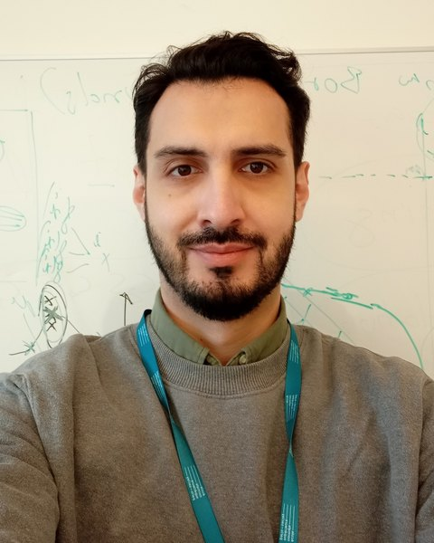
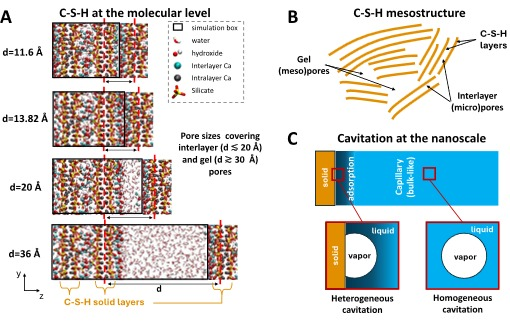
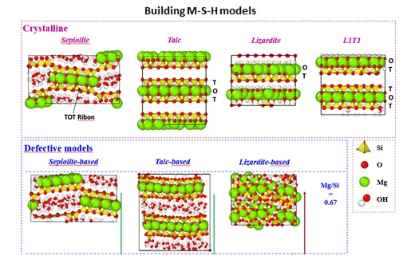
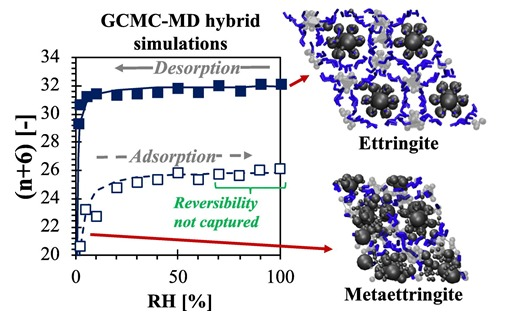
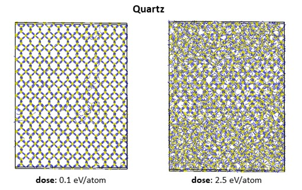
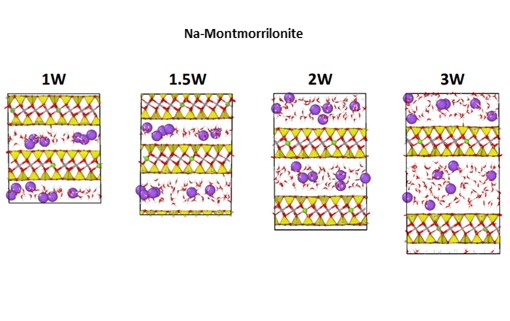
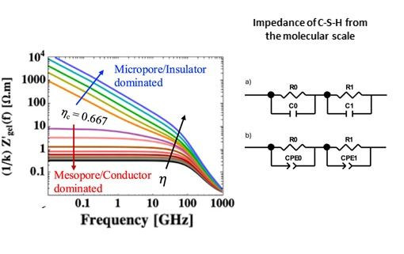
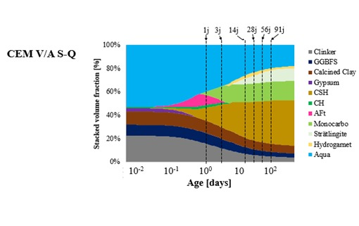
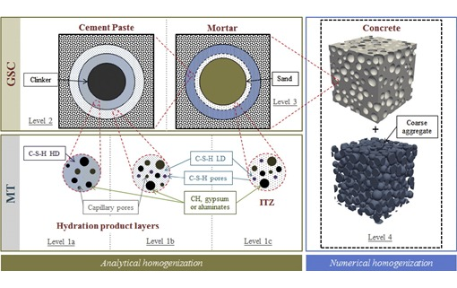

Research Engineer · Senior Expert · CEA Paris-Saclay
Tulio Honorio de Faria
I develop multiscale, multiphysics models that connect the molecular structure of cement hydrates and clays to the durability and mechanics of concrete. My work combines molecular simulation, thermodynamic modeling, micromechanics and experiments, with a focus on confined water, alkali–silica reaction, irradiation effects and low-carbon binders.
I chair the RILEM Technical Committee ASM on atomistic simulations for cement-based materials. HDR, Université Paris-Saclay (2023). Previously Associate Professor at ENS Paris-Saclay (2018–2023).

Ongoing projects
All research
Alkali–silica reaction
Atomic structures, thermodynamics and expansion mechanisms of ASR products, from crystalline phases to mortar.

Coarse-grained C-S-H gel
Mesostructure and mechanics of C-S-H and ASR gels from coarse-grained simulations with flexible multi-site particles.

C-S-H at the molecular scale
Atomic models of C-S-H and the behaviour of the water confined in its nanopores.

M-(A)-S-H
Synthesis, atomic structures and properties of magnesium (alumino)silicate hydrates, a binding phase of low-carbon cements.

Sorption and sorption-induced deformation
Water sorption, hysteresis and disjoining pressure in nanopores, and the shrinkage and swelling they cause.

Superplasticizers (PCE)
Atomistic and coarse-grained models of polycarboxylate ether superplasticizers and their adsorption on cement phases.

Irradiation effects in cement systems
Radiolytic H₂ production and transport in cement hydrates, and radiation-induced volumetric expansion (RIVE) of aggregate minerals.

Water and ions in clays
Anomalous diffusion, swelling and thermo-poromechanics of water and counterions confined in swelling clays.

Electrical and dielectric properties
Dielectric permittivity and ionic conductivity of pore solutions and hydrates, upscaled for non-destructive testing.

Low-carbon concrete
Composition–property links for blended low-clinker cements, from thermodynamic modelling and micromechanics to experiments.

Micromechanics and upscaling
Analytical and numerical homogenization linking the properties of cement phases to those of paste, mortar and concrete.
Recent papers
Full list-
Anomalous diffusion of water and ions in swelling clays The Journal of Physical Chemistry C (2026) in press
-
Power-law creep in C-S-H emerging from subdiffusive dynamics Cement and Concrete Research 209, 108362 (2026) Open access doi:10.1016/j.cemconres.2026.108362
-
Fluorescence-based detection of apparent crystallization pressure in microfluidic channels Journal of Crystal Growth 694, 128749 (2026) Open access doi:10.1016/j.jcrysgro.2026.128749
-
Crystalline ASR products: review of mineral candidates and molecular simulations of their atomic structures, thermodynamic data and thermoelastic properties Cement and Concrete Research 208, 108326 (2026) Open access doi:10.1016/j.cemconres.2026.108326
-
Opening Letter of RILEM TC ASM: Atomistic Simulations for Cement-Based Materials: Recommendations and link to Experiments RILEM Technical Letters 11, 89–100 (2026) Open access doi:10.21809/rilemtechlett.2026.238
News
All news →- Oct 2026Our paper "Multiscale modeling of the electrical resistivity of cementitious systems with mineral additions", by Walter Batista Bonfim, Tulio Honorio and Oswaldo Cascudo, received the Best Paper Award of the Cements Working Group at ENTAC 2026, held in Goiânia, Brazil, on 14–16 October 2026. Congratulations to Walter on this recognition!
- Oct 2026Congratulations to Bilal Mahmoud Hawchar on receiving the ALERT Geomaterials Ioannis Vardoulakis PhD Prize for his thesis on crystallization pressure!
- 2026Opening letter of RILEM TC ASM published in RILEM Technical Letters.
- 2026Fatima Masara joins as postdoc to work on the structure and elasticity of M-(A)-S-H.
- 2026Walter Batista Bonfim (UFG, Brazil) visits to work on C-S-H impedance for low-carbon cements.
Community
Chair of RILEM TC ASM, Atomistic Simulations for Cement-Based Materials: recommendations and link to experiments.